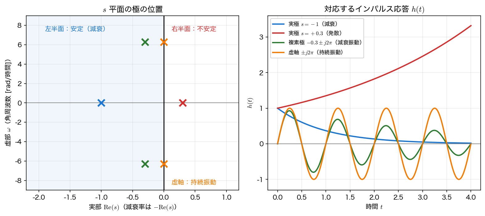
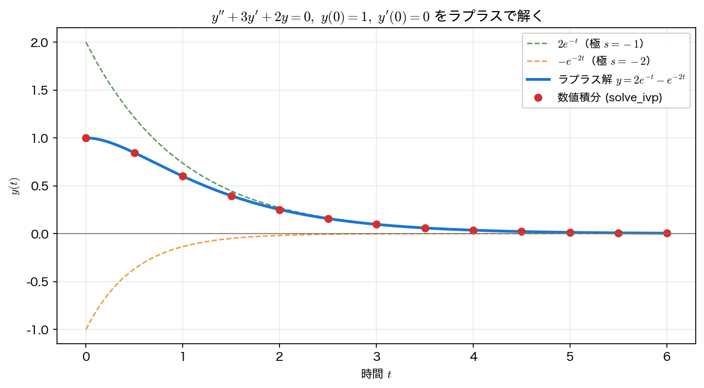

逆ラプラス変換と s 平面
前ページでは時間領域からラプラス変換 \(F(s)\) を求めた。本ページでは逆向き ── \(F(s)\) から時間関数 \(f(t)\) を復元する 逆ラプラス変換 を扱う。実用上の鍵は 部分分数分解 であり、その背後にある s 平面の極 が時間応答を決める。最後に、この道具立てで 微分方程式を解く。
逆変換は部分分数分解で
逆ラプラス変換は本来、複素積分（ブロムウィッチ積分）で定義されるが、実用上は積分を直接行うことはまずない。システム解析で現れる \(F(s)\) はたいてい \(s\) の有理関数（多項式 ÷ 多項式）なので、これを 部分分数 に分解し、各項を変換対の表（前ページ）で逆変換すればよい。以下では、分子の次数が分母の次数より真に小さい 厳密プロパー（strictly proper）な有理関数を扱う。分子の次数が分母以上だと、割り算で出てくる多項式部分が \(\delta(t)\) やその導関数に対応してしまい、通常の関数の範囲に収まらないためである（例：\(\frac{s}{s+1}=1-\frac{1}{s+1}\ \leftrightarrow\ \delta(t)-e^{-t}\)）。
例として \(F(s)=\dfrac{s+3}{(s+1)(s+2)}\) を考える。部分分数に分けると
各項は表より \(\dfrac{1}{s+a}\leftrightarrow e^{-at}\) だから、
sympy なら部分分数も逆変換も一発で確認できる。
import sympy as sp
t = sp.symbols("t", positive=True) # s は複素変数なので仮定を付けない（前ページの warning 参照）
s = sp.symbols("s")
F = (s + 3) / ((s + 1) * (s + 2))
print("部分分数:", sp.apart(F, s))
print("逆変換 :", sp.simplify(sp.inverse_laplace_transform(F, s, t)))
\((2e^{t}-1)e^{-2t}=2e^{-t}-e^{-2t}\) で、手計算と一致する。数値的に部分分数の 係数（留数）と極 を取り出すなら scipy.signal.residue が使える。
import scipy.signal as ss
# 分子 s+3 = [1, 3], 分母 (s+1)(s+2) = s^2+3s+2 = [1, 3, 2]
r, p, k = ss.residue([1, 3], [1, 3, 2])
print("留数 r =", r, " 極 p =", p)
留数 \(r=[2,-1]\)、極 \(p=[-1,-2]\) から、\(f(t)=2e^{-t}+(-1)e^{-2t}\) と読める。
s 平面の極と時間応答
有理関数 \(F(s)=\dfrac{N(s)}{D(s)}\) について、\(N\) と \(D\) の共通因子を約分した既約形を作ったうえで、分母 \(D(s)=0\) の根を極（pole）、分子 \(N(s)=0\) の根を 零点（zero） と呼ぶ。約分が必要なのは、たとえば \(\dfrac{s+1}{s+1}=1\) の \(s=-1\) が極でも零点でもないからである。逆変換した時間関数の振る舞いは、極の位置だけ でほぼ決まる。極 \(s=p\) は時間領域の \(e^{pt}\) に対応するからである。
- 実極：\(s=p\)（実数）\(\to e^{pt}\)。\(p<0\) なら減衰、\(p>0\) なら発散。減衰率は \(-\operatorname{Re}(p)\)（\(\operatorname{Re}(p)\) そのものは指数の増大率）。
- 複素共役の極対：\(s=-\sigma\pm j\omega \to e^{-\sigma t}\cos(\omega t+\phi)\)。実部 \(-\sigma\) が減衰率 \(\sigma\) を、虚部 \(\omega\) が 角周波数［rad/時間］を与える（Hz 単位の振動数は \(f=\omega/(2\pi)\)）。
- 重極：既約形で \(D\) が \((s-p)^m\) を因子にもつ \(m\) 重極 のときは、\(e^{pt}\) だけでなく \(t^{m-1}e^{pt}\) までの多項式倍の項が現れる（例：\(\dfrac{1}{(s+1)^2}\leftrightarrow te^{-t}\)）。
したがって、極が複素平面のどこにあるかで応答が分類できる。

極の位置と「安定性」
すべての極が 左半面（\(\operatorname{Re}(s)<0\)） にあれば、応答は時間とともに \(0\) へ減衰する ── これを（漸近）安定 という。1 つでも右半面に極があれば発散して 不安定。右半面に極がなく、虚軸上の極が すべて単純（1 重） な場合が境界のケースで、減衰も発散もしない 持続振動 となる。これを 限界安定 と呼ぶ。
ここで「単純」という条件は落とせない。虚軸上に 重極 があると振幅は発散する。たとえば \(\dfrac{1}{(s^2+1)^2}\) の逆変換は \(-\dfrac{t\cos t}{2}+\dfrac{\sin t}{2}\) で、\(t\cos t\) の項が線形に増大する。虚軸上に極があるだけで「持続振動」と即断してはいけない。
さらに、入力に対する BIBO 安定（有界な入力に有界な出力）では基準がもっと厳しく、虚軸上の極は単純であっても不安定 と判定される。実際 \(\dfrac{1}{s^2+1}\) の系に共振する入力 \(\sin t\) を入れると出力は発散する。漸近安定・限界安定・BIBO 安定の厳密な区別は第8回で整理する。この「極の位置で安定性が決まる」という見方は、第8回の応用（制御・安定判別）の中心テーマになる。
ラプラス変換で微分方程式を解く
ここまでの道具 ── 微分の公式（前ページ）と 部分分数による逆変換 ── を組み合わせると、微分方程式が機械的に解ける。次の初期値問題を解いてみる。
手順1：両辺をラプラス変換する。 微分の公式 \(\mathcal{L}[y']=sY-y(0)\)、\(\mathcal{L}[y'']=s^2Y-sy(0)-y'(0)\) を使うと、
手順2：\(Y(s)\) について解く（代数方程式！）。
手順3：部分分数に分けて逆変換する。 これは先ほど計算した式そのもので、
時間領域の微分方程式が、s 領域では ただの代数方程式 になった点に注目してほしい。これがラプラス変換の威力である。得られた解を数値積分（scipy.integrate.solve_ivp）と比べて検証する。
import numpy as np
import sympy as sp
from scipy.integrate import solve_ivp
t = sp.symbols("t", positive=True)
s = sp.symbols("s")
# --- ラプラス変換による解：(s^2+3s+2)Y = s+3 を Y について解いて逆変換 ---
ys = sp.symbols("Y")
Ys = sp.solve(sp.Eq((s**2 + 3*s + 2) * ys, s + 3), ys)[0]
y_t = sp.expand(sp.inverse_laplace_transform(Ys, s, t))
print("ラプラス解 y(t) =", y_t)
# --- 数値積分で検証 ---
def rhs(tt, z): # z = [y, y']
return [z[1], -3*z[1] - 2*z[0]]
tm = np.linspace(0, 6, 7)
num = solve_ivp(rhs, [0, 6], [1.0, 0.0], t_eval=tm, rtol=1e-10, atol=1e-12).y[0]
ana = 2*np.exp(-tm) - np.exp(-2*tm)
print("最大誤差:", f"{np.max(np.abs(num - ana)):.2e}")
（sympy の生の出力は (2*exp(t) - 1)*exp(-2*t) だが、expand で見慣れた \(2e^{-t}-e^{-2t}\) に整理している。）
ラプラス変換による解析解と数値積分が、\(\sim10^{-12}\) の範囲で一致する。この差は丸め誤差ではなく 数値積分（時間刻みを有限個に区切ったこと）による誤差 で、許容誤差の指定で大きさが変わる。上のコードで atol=1e-12 のまま rtol だけを変えると、最大誤差は rtol=1e-3（solve_ivp の既定値）で 2.39e-05、1e-6 で 4.29e-08、1e-10 で 1.99e-12 と、指定した許容誤差に応じて素直に小さくなる ── 解析解があるからこそ、こうして数値解の精度そのものを測ることができる。

まとめ
- 逆ラプラス変換は 部分分数分解 → 変換対の表 で求める（
sympy.apart／inverse_laplace_transform、scipy.signal.residue）。 - 有理関数 \(F(s)=N/D\) の 極（既約形にしたうえで \(D=0\) の根）が時間応答を決める。実極は減衰／発散、複素対は（減衰）振動、\(m\) 重極は \(t^{m-1}e^{pt}\) まで。減衰率は \(-\operatorname{Re}(p)\)、角周波数は \(\operatorname{Im}(p)\)。
- 左半面なら（漸近）安定、右半面なら不安定、虚軸上の極がすべて単純なら限界安定（持続振動）。虚軸上の重極は発散するので「虚軸＝持続振動」と即断しない。
- 微分の公式 → 代数方程式 → 部分分数 → 逆変換 の流れで、初期値問題が機械的に解ける。\(y''+3y'+2y=0\) の解 \(2e^{-t}-e^{-2t}\) は数値積分と一致する。
本講義との接続
本回では入力のないシステム（自由応答）を扱った。第7回 では 畳み込み積分 と各種公式を整え、入力 \(X(s)\) と出力 \(Y(s)\) を結ぶ 伝達関数 \(H(s)=Y(s)/X(s)\) を導入する（第4回でフーリエ領域の積として見た「フィルタ」の一般化）。第8回 では極の位置から 安定性 を判定し、過渡応答・制御へ応用する。s 平面の極という見方は、これらすべての土台になる。